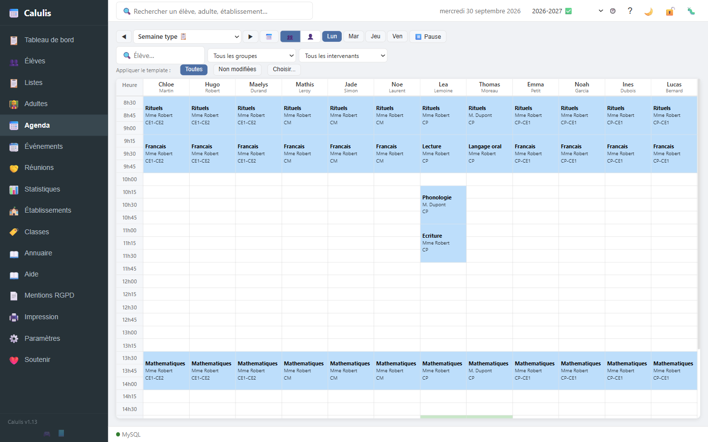

Télécharger
Version 1.13
29 septembre 2026 · Windows 10 et 11 (64 bits) · 228 Mo · aucune installation
Télécharger Calulis 1.13 (228 Mo)Le téléchargement démarre directement. Si le bouton ne fait rien, passez par la page du fichier.
Empreinte SHA-256 du fichier :34dc6f1630d859b57e31182f73c390e29c5b03db92d964f15a7693cc699579b6
Ce que fait Calulis
- Élèves, classes, groupes, années scolaires — avec l'historique des années précédentes.
- Emploi du temps par semaine : créneaux, matières, adultes, AESH, conflits signalés.
- Séances, événements, réunions, échéances MDPH et ESS à relancer.
- Impression et export PDF : emplois du temps, listes, fiches élèves, fiches urgence, statistiques.
- Export des réunions et événements au format .ics pour l'agenda du téléphone.
Les données restent sur votre ordinateur : l'application fonctionne sans connexion Internet, sans compte, sans publicité, et n'envoie rien à l'extérieur.

Installation
- Téléchargez le fichier ZIP, puis extrayez-le où vous voulez (clic droit → « Extraire tout »). Ne le lancez pas depuis l'aperçu du ZIP.
- Dans le dossier extrait, double-cliquez sur
Calulis.bat. - Dans la fenêtre du lanceur, cliquez sur Démarrer.
- Choisissez la base de données : Base Démo (pour essayer avec des données fictives) ou Base Vierge (pour vos propres données). Aux lancements suivants, Calulis propose de continuer avec votre base.
- L'application s'ouvre dans votre navigateur, à l'adresse
http://127.0.0.1:8088. Le premier lancement peut prendre une minute (préparation de la base de données).
Mises à jour
Au démarrage, Calulis vérifie s'il existe une version plus récente et la propose : seuls les fichiers modifiés sont téléchargés (moins d'un mégaoctet), et une sauvegarde de vos données est faite avant la mise à jour. Vos données sont conservées.
Si votre version n'a plus de mise à jour automatique possible, la solution est de réinstaller depuis le ZIP ci-dessus, puis de restaurer vos données avec Paramètres → Sauvegarde / Restauration.
Version précédente
Version 1.12.1
28 septembre 2026 · 227 Mo · encore en ligne quelque temps
Télécharger la version 1.12.1 —
empreinte SHA-256 : ee9b241668e67869cf989f4638e57d337f938facfe7fa1389415ff924ec60ca2
Elle est conservée pour les installations qui sont déjà sur cette version. Pour une installation neuve, prenez la version 1.13 : elle contient les corrections les plus récentes.
Soutenir
Calulis est développé par un seul enseignant spécialisé, bénévolement, et reste gratuit et complet avec ou sans soutien. Il n'y a ni version payante, ni fonction réservée, ni publicité : les frais (assistant de développement, matériel de test) sont simplement de ma poche.
Si vous voulez donner un coup de main : faire un don par PayPal.